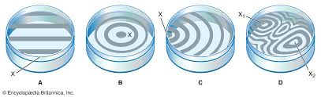

Introducere în curs
Interferența. Inelele lui Newton.
Introducere în curs
Interferența luminii este un fenomen optic fundamental care apare atunci când două sau mai multe unde de lumină se suprapun, rezultând un model complex de intensitate variabilă. Acest concept a fost studiat intens de către fizicieni, iar unul dintre cele mai celebre experimente în acest domeniu a fost realizat de Sir Isaac Newton, care a observat fenomenul inelelor de interferență. În această lucrare, vom explora teoria interferenței, mecanismul de formare a inelelor lui Newton și implicațiile acestora în înțelegerea naturii luminii.
Teoria Interferenței
Interferența se referă la suprapunerea a două sau mai multe unde, rezultând o combinație a amplitudinii și fazei acestora. În funcție de cum se aliniează aceste unde, interferența poate fi constructivă (undele se adaugă, rezultând o amplitudine mai mare) sau destructivă (undele se anulează reciproc). Ecuația de bază care descrie interferența este dată de:
dsin(θ)=mλ
unde 𝑑 este distanța dintre fante, 𝜃 este unghiul de interferență, 𝑚 este ordinea interferenței, iar 𝜆 este lungimea de undă a luminii.

Experimentele lui Newton
Isaac Newton a realizat un experiment notabil cu ajutorul unei lame cu fețe paralele, care a dus la observarea inelelor de interferență. Prin transmiterea luminii printr-o fanta foarte subțire între două fețe paralele, a observat formarea unor cercuri concentrice colorate, cunoscute sub numele de inelele lui Newton. Aceste inele apar din cauza interferenței între razele de lumină care călătoresc pe diferite traiectorii prin fanta.
Formarea Inelelor lui Newton
Inelele lui Newton sunt generate datorită variației distanței dintre cele două fețe paralele ale lamei. Când lumina trece prin această fanta, razele reflectate de cele două fețe interferează. Această interferență depinde de grosimea peliculei de aer dintre lame, care variază de la zero la un maximum. Acest gradient de grosime produce inele de intensitate variabilă, alternând dungi luminoase și întunecate.
Modele de interferență formate cu suprafețele de testare.
Aplicații și Implicații
Fenomenul inelelor lui Newton nu doar că demonstrează natura ondulatorie a luminii, dar are și aplicații în domeniul optic, cum ar fi în calibrările instrumentelor optice. De asemenea, studiul interferenței a deschis calea pentru înțelegerea unor concepte mai avansate în fizica modernă, inclusiv teoria cuantelor și mecanica ondulatorie, contribuind astfel la dezvoltarea tehnologiilor optice contemporane, cum ar fi laserele și holografia.